Reduction of aldehydes and ketones to alcohols is most commonly carried out by metal hydride reagents, dissolving metal reagents, and sometimes by catalytic hydrogenation. A table listing these reagents and the conditions under which they are best used is available by clicking here. Prior to the development of these new and powerful reduction methods, the conversion of carbonyl compounds to alcohols was often effected by hydrogen transfer from an alkoxide salt. This procedure, known as the Meerwein-Pondorf-Verley reaction, is illustrated by the following equation and mechanism ( the hydride-like hydrogen is colored red). Aluminum isopropoxide has been the most common hydrogen source in most cases, but lanthanide salts, such as ROSmI2 have been used with good results. This reduction is specific for aldehyde and ketone carbonyl functions, so other easily reduced functions such as nitro groups and halogen are unaffected.
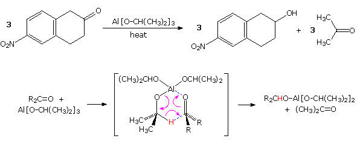
By clicking on the above diagram, a second example of MVP reduction, which demonstrates the stereoselectivity of the reduction will be presented. Not only are two hydrogens delivered independently from the least hindered (convex) side of the cis-decalin substrate in example 1, but the easily reduced double bond of the enedione remains unchanged. The initially formed cis-diol undergoes lactonization with the neighboring methyl ester. It should be noted that a similar reductive hydride transfer takes place when large alkyl Grignard reagents react with hindered ketones, as shown in equation 2.
The MVP reduction is also an oxidation, as evidenced by the conversion of isopropoxide to acetone. Consequently, the reaction can be converted into an oxidation of alcohols to ketones or aldehydes. This procedure is called the Oppenauer oxidation. The reaction displayed below is an example of the Oppenauer oxidation in which benzophenone is the oxidant. Two significant features may be noted. First, the oxidation is specific for alcohols, and does not oxidize other sensitive functions such as amines and sulfides. Second, although aluminum or other coordinating metals are often used as cationic partners, alkali metals alone will suffice.
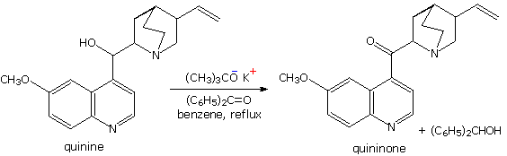
When a non-enolizable aldehyde is heated in strong aqueous base, a redox transformation known as the Cannizzaro reaction takes place. Two examples are shown in the following diagram. In the first, formaldehyde disproportionates into methanol and formic acid (sodium salt). In the second, a benzaldehyde derivative is similarly converted into an equimolar mixture of the corresponding benzyl alcohol and benzoic acid derivatives. A hydride transfer mechanism analogous to that of the MVP reaction is drawn in the shaded box. If the Cannizzaro reaction is run in D2O with NaOD as a base, no C-D incorporation is observed. Thus the new carbon-bonded hydrogen in the alcohol cannot have come from the solvent. It is important to remember that the the Cannizzaro reaction is restricted to non-enolizable aldehydes. The strong base used for this reaction would initiate aldol and other reactions that take place via enolate anions. A useful crossed Cannizzaro reaction employs an excess of formaldehyde to reduce aryl aldehyde substrates to 1 º-alcohols. The success of this procedure may be attributed to the high concentration of the hydrate, H2C(OH)2, in aqueous solutions of formaldehyde, making it the only significant hydride donor in the system.
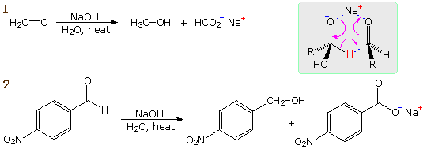
An intramolecular Cannizzaro reaction, sometimes termed a Cannizzaro rearrangement will be displayed above by clicking on the diagram. A variant of the Cannizzaro reaction, known as the Tischenko reaction is also shown. In this reaction the alcohol and acid products combine to form an ester.
This page is the property of The Edvibe Team. Comments, questions and errors should be sent to contact@edvibe.co.ke. These pages are provided to the IOCD to assist in capacity building in chemical education. 05/05/2013
Exhaustive base-catalyzed halogenation of methyl ketones is accompanied by C–C bond cleavage, yielding a carboxylate salt and haloform ( X3CH ). As shown in the diagram, an enolate conjugate base reacts with elemental halogen to form an α-halo ketone. This process is repeated until the α-site is fully halogenated. The trihalo derivatives formed from methyl ketones are then cleaved by base attack at the carbonyl group, reflecting the relative stability of the trihalomethyl anion as a leaving group.
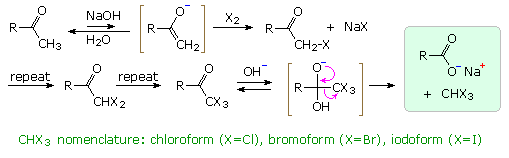
Before nmr became an essential tool for structure elucidation, a variant of the haloform reaction called the iodoform test was used to identify methyl ketones, as well as alcohols that gave methyl ketones when oxidized. By clicking on the diagram an illustration of this test will appear as reaction 1. The iodoform product is an easily identifiable, bright yellow, water-insoluble solid with a characteristic odor. The haloform reaction has also been used to prepare carboxylic acids, as in the synthesis of trimethylacetic acid from acetone shown in reaction 2. Dissolving metal reduction of acetone gives the diol pinacol, which then undergoes acid-catalyzed rearrangement to the methyl ketone pinacolone.
The aldol reaction is potentially a powerful synthetic tool. As demonstrated by the following equation, a directed aldol reaction between different aldehydes would produce a single crossed aldol product (the new bond is colored maroon) and create two new stereogenic centers (colored blue). However, conducting this reaction with aqueous NaOH usually generates a mixture of four different adducts, and frequently β-elimination of water when possible.
In this section methods of controlling the enolate donor and carbonyl acceptor reactants to produce a single aldol product will be described and discussed. Several important principles must be taken into consideration for this purpose.
The reversibility of conventional aldol reactions is illustrated by the crossed aldol condensation of 2-butanone with benzaldehyde, illustrated below. The methyl hydrogens are kinetically more acidic than the methylene hydrogens, so the α'-enolate is generated more rapidly than the more substituted α-enolate. As a rule, ketone enolate bases react more rapidly with aldehydes than with ketones, so self condensation of the ketone is minimal. Both enolate anions add reversibly to benzaldehyde to form β-hydroxy ketones; however, the α-enolate product (on the left) reverts to reactants faster than it eliminates water. In contrast, the isomeric α'-enolate product (on the right) undergoes rapid β-elimination to the observed 5-phenyl-4-penten-3-one final product. The significance of aldol reversibility is dramatically demonstrated by the base-catalyzed isomerization of 2-methyl-1-acetylcyclobutene, a reaction that will be outlined below by clicking on the diagram.
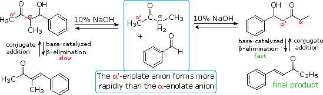
Acid catalysis of the 2-butanone-benzaldehyde reaction gives the isomer, 3-methyl-4-phenyl-3-buten-2-one, as the chief product, thanks to the predominance of the more substituted α-enol as an intermediate. In this case both β-hydroxy ketone intermediates undergo reversible dehydration.
Lithium enolate derivatives of aldehydes or ketones may be formed at low temperature by slow addition of the carbonyl compound to an excess of LDA in THF (-78 ºC). In this procedure self aldolization is avoided, because freshly introduced aldehyde (or ketone) reacts with the powerful LDA base more rapidly than with any less basic enolate already present. In the following example, a preformed lithium enolate of 2-pentanone is reacted with propanal at low temperature, ca. -15 ºC. Only the desired aldol addition takes place, with very little enolate exchange occurring by proton transfer. Both enolate formation and aldol addition are essentially irreversible, with a forward to reverse rate difference of roughly ten powers of ten (based on pKa values). The lithium salt of the final adduct is quenched in dilute acid to give the β-hydroxyketone. A new stereogenic center is created in this reaction, resulting in a racemic mixture of products.
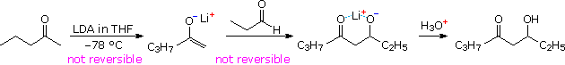
Aldol reactions at an α-methylene group generally create two new stereogenic centers, thus producing diastereomeric pairs of enantiomers. These diastereomers are called syn and anti, as described in an earlier section. The ability to control the configurational outcome of such reactions is vital to the use of aldol reactions in complex synthesis, and considerable effort has been directed toward achieving this end. The three reactions shown in the following diagram illustrate some of the factors to be considered. If the preformed lithium enolate of cyclohexanone reacts with benzaldehyde under rate controlling conditions (irreversible addition), the anti isomer is the preferential product (eq. 1). Under equilibrating conditions, the two diastereomers are produced in nearly equal quantity. Magnesium and zinc enolates may be prepared by reacting α-bromo carbonyl compounds with these metals, as illustrated in equation 2. The aldol addition in such cases usually requires a higher temperature. In all these examples the reactants are achiral and the products are racemic. Moderately sized cyclic ketones can only generate one enolate stereoisomer (configuration E), but acyclic ketones may give E or Z-enolates. In the case of 2,2-dimethyl-3-hexanone, reaction with LDA gives the lithium Z-enolate (98%), as shown in equation 3. Here, the rate controlled aldol reaction strongly favors the syn-diastereomer, but under equilibrium control the anti-isomer is the dominant product. The size of ketone substituents also influences the isomer distribution of aldol products, as illustrated by the E-enolate reactions of the two compounds in equation 4.
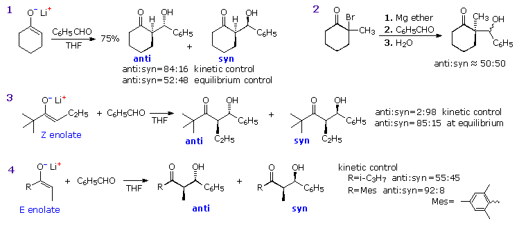
From these examples it is clear that kinetic selectivity in the aldol reaction depends in large part on the configuration of the enolate reactant. The first of the following tables illustrates the dramatic influence of the accompanying carbonyl substituent (R) on the Z to E ratio of enolate species formed by reaction of a CH3CH2C=O moiety with LDA. The second table demonstrates how the amide base used for enolate formation may direct reaction exclusively to an E or Z-product, provided the other carbonyl substituent does not exert a controlling influence (e.g. tert-butyl). Identification of enolate species is usually achieved by trapping them as their silyl enol ethers.
An explanation for these interesting and useful characteristics requires consideration of the transition state for base induced enolate formation. Two putative transition states are displayed at the top of the following diagram. An early state that resembles reactants is on the left, while a late state resembling products is on the right. The product from each transition state is the enolate drawn in the green shaded box between them. Dialkylamide bases such as LDA and LTMP are powerful bases that react rapidly with simple aldehydes and ketones, presumably by an early transition state. The chief steric interactions (orange circles) are between R & R1 in the substrate, and between R2 & L (a substituent on the nitrogen base). The former is particularly strong in tert-butyl ketones, resulting in predominate Z-enolate formation (the oxygen group is smaller than tert-butyl). For less sterically demanding R groups, the R2:L interaction acts to favor the E-enolate, and may dominate when L is large (i.e. LTMP). This tendency is enhanced by added LiBr. In contrast, hexaalkyldisilazide bases such as LHMDS, (Et3Si)2NLi, and [Ph(CH3)2Si]2NLi are much weaker bases (at least a million times) and will probably react by a later transition state. Here the Si–N bonds are longer than the C–N bonds of the amide bases, and the entire L2NH moiety is shifted away from the enolate substrate. Consequently, the L:R2 interaction is relatively unimportant, leading to a preference for Z-enolates.
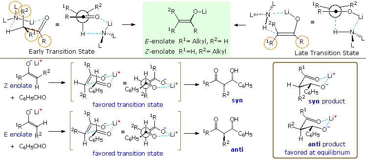
Extensive study of aldol reactions with aldehyde acceptors has led to the general rule: Z-enolates favor syn-products and E-enolates favor anti products. To explain this stereoselectivity a chair-like transition state, called the Zimmerman-Traxler model, has been proposed, and examples are drawn beneath the enolization transition states in the above diagram. The lower energy transition state for the Z-enolate aldol has a gauche relationship between the phenyl and R2 groups, and this leads to the syn-product. Rotating the aldehyde 180º about the C=O creates an equivalent transition state for the anti-isomer, which suffers from a destabilizing 1,3-diaxial hinderance between the phenyl and R1 groups. The favored transition state for an E-enolate aldol has a similar gauche interaction, but leads to the anti-product. Once the new C–C bond has formed, the aldol product can relax into a chair-like chelate structure (drawn in the brown box on the right). In the case of the anti-product, all substituents are equatorial. The equivalent structure for the syn-isomer has an axial R2 group. In general, anti-aldols are more stable than their syn analogs. A link to a model for the chair-like transition state is provided below. Three additional aldol reactions will be displayed above by clicking on the diagram. Reaction 5 demonstrates that a very bulky substituent on the α-carbon of a Z-enolate can dramatically change the stereoselectivity from syn to anti. A similar effect has been reported for E-enolate reactions. Two modifications of the idealized chair transition state, the twisted chair and boat models drawn in the box at the upper right, have been suggested to accommodate these facts. Note that different faces of the carbonyl group bond to the enolate species in these structures, with the re(si)-face in the twisted boat bonding to the re(si)-face of the Z-enolate to yield the anti-diastereomer. Reaction 6 demonstrates stereoelectronic control in the bonding of the carbonyl reactant to the enolate intermediate. The bulky t-butyl substituent maintains an equatorial orientation on the six-membered ring, disclosing axial attack of benzaldehyde at the α-carbon. Finally, reaction 7 shows an intramolecular Tischenko reaction following an aldol reaction, the result being stereoselective construction of a 2-methyl-1,3-diol. The hydride transfer step is rate determining, so the aldol intermediate is the thermodynamically favored anti-diastereomer. A six-membered chair-like transition state accounts for the selective reduction of the carbonyl group.
A cautionary point must be made regarding these models and mechanisms. The lithium cation associated with the amide base and the enolates is organized in oligomeric clusters of substrate and solvent species that are much larger than the atoms (or groups) shown here. These amide and enolate ion clusters have variable compositions, and are presumably in rapid equilibrium with other clusters of the same type.
Enolate anions may be trapped, purified and stored as silyl enol ethers. The most commonly used silyl group is trimethylsilyl (TMS), but other useful derivatives are the tert-butyldimethylsilyl (TBDMS), dimethylphenylsilyl (DMPS) and triisopropylsilyl (TIPS) analogs. As a rule, silyl enol ethers are not as reactive as their anion precursors, but under suitable conditions may be induced to give aldol products when reacted with carbonyl acceptor compounds. The equations above the heavy horizontal line in the following diagram illustrate how mixtures of TMS enol ethers may be prepared under mild conditions, separated by distillation or chromatography, and then used to generate isomerically pure lithium enolates. As expected, the enolates react regioselectively with electrophilic reagents.
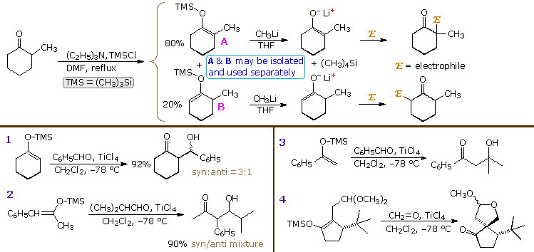
Mixing silyl enol ethers with aldehydes or ketones does not normally result in any reaction, even at elevated temperatures. In order to effect an aldol-like transformation, it is necessary to increase the electrophilicity of the carbonyl group by adding a Lewis acid catalyst. Four examples of such reactions, known as the Mukaiyama aldol, are displayed below the horizontal line. Reactions 1 and 2 generate a mixture of syn and anti diastereomers. Although there is a preference for the syn-isomer from both E and Z-enol ethers, this diastereoselectivity is less pronounced than that of lithium enolates. In contrast to the closed cyclic transition states proposed for the latter, the acid-catalyzed reactions of the silyl enol ethers are presumed to take place by way of an open, less organized transition state, which favors syn-products regardless of the enolate configuration. Aldehydes are the most common co-reactants with silyl enol ethers, but catalyzed aldol reactions with ketones have also been reported, as shown in reaction 3. Reaction 4 is an interesting case in which the catalyzed aldol is followed by an acetal exchange involving the new hydroxyl group. The bulky tert-butyl substituent blocks cis-attack of formaldehyde on the enolate, directing the new bond formation trans to that group.
The aldol diastereoselectivity of lithium enolates has been attributed to a structurally organized closed transition state, in which the two oxygen atoms are coordinated to the metal cation. Since lithium is not an exceptionally strong chelating agent, replacing it with a larger and stronger electrophile should improve the diastereoselectivity of this important synthetic method. To this end, enolborinates have proven to be particularly effective. The comparatively short B–O bond of a dialkyl boron enolate, together with the electrophilic character of trivalent boron provides a tighter, more highly organized transition state, and in most cases leads to enhanced diastereoselectivity. A model of the cyclic aldol transition state may be examined by . The preparation of suitable enolborinates is accomplished by reacting a ketone, ester or amide with a dialkylchloroborane (or equivalent triflate) and a 3º-amine base, as outlined in the following equation.. The alkyl substituents on boron are usually n-butyl, cyclopentyl (Cpen), cyclohexyl (Chex) or the C8H14 substituent of a 9-borobicyclononane moiety (shown in the diagram). The 3º-amine base is most commonly triethyl amine (Et3N), N-ethyldiisopropylamine (Hünig's base) or 2,6-dimethylpyridine (lutidine). Less hindered amines (e.g. pyridine and DABCO) are ineffective, possibly due to irreversible complexation with the boron reagent.
Some examples of the selective formation of enolborinate derivatives from ketones, and their diastereoselective reaction with aldehydes are displayed in the following diagram. In most cases the enolborinate is generated in ether solution at –78 ºC, and may either be reacted directly with an aldehyde acceptor or converted to a TMS silyl ether for spectroscopic identification. By judicious selection of the boron reagent and base, it is clear that specific syn or anti-isomers may be prepared in high purity and good yield from simple acyclic ketones. These procedures also effect regioselective enolborination of unsymmetrical ketones, as demonstrated by the examples displayed by clicking on the diagram. The dominant enolborinate in all cases is that derived from the kinetically favored enolate anion.
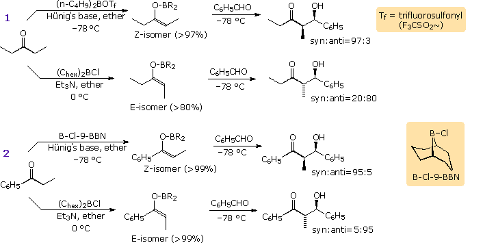
By clicking on the diagram a second time, a mechanism model for these reactions will appear. The favored chair transition state, T1 or T4, is that in which steric crowding of R1 and R2 is avoided. Large substituents (R) on boron enhance this steric control. Curiously, cyclic ketones which are restricted to E-enolborinate intermediates do not exhibit as large a specificity toward anti-aldol products as do their acyclic counterparts. The cyclohexanone example shown below the horizontal line is typical. The stereospecificity of these aldol reactions is improved by using nonpolar solvents, possibly because the structure of the transition state is tightened due to lack of competitive coordination with boron.
It is not a simple task to write a single mechanism that rationalizes all the experimental results concerning enolborinate formation. Among the variables that must be accommodated are the nature and size of the carbonyl substituents. Thus, tert-butyl ethyl ketones give Z enolates under kinetic control, whereas tert-butyl esters of propanoic acid give E-enolates. Other critical variables are the size and orientation of the alkyl substituents on the R2BX reagent, the nature of the leaving group X, the size of the 3º-amine base, and solvent polarity. A sequence of events that may influence the course of these enolizations is proposed here:
Some Events Associated with Enolborinate Formation
• Acyclic ketones such as 3-pentanone generally adopt a zig-zag conformation. Least motion enolization would give a Z-enol. • The nucleophilic oxygen of the ketone coordinates reversibly with the boron reagent. C=O + R2BX ⇔ C=O–BR2X • A bulky boron moiety may shift the conformer equilibrium of the complexed ketone to gauche forms, favoring an E-enol. [ R=Chex > R=9BBN in size ] • The B–X bond ionizes to X(–). This increases the B–O bond strength and the acidity of the α-hydrogens. [ reactivity X=OTf > X=Cl ] • The 3º-amine base removes an α-proton, forming the enolborinate. Hünig's base is more hindered and reacts more slowly than triethylamine. (Note that the last two events may be concerted, as in an E2 elimination.)
A convenient procedure for preparing Z-titanium enolate derivatives has been reported by D. A. Evans (Harvard). As shown in the following illustration, these intermediates react with aldehydes to give syn-isomers with high diastereoselectivity. A cyclic transition state similar to that proposed for the enolborinate reactions is suggested.
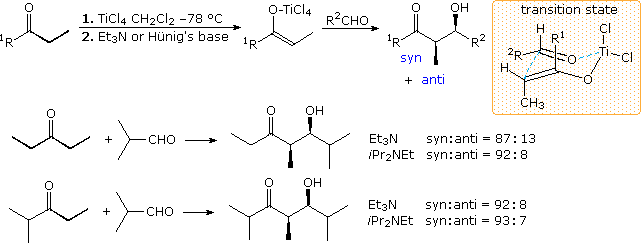
Examples of imine and enamine analogs of enolate species are well known. The following diagram gives two examples of metalated imine and hydrazone intermediates in carbon bond forming reactions at an α-carbon. The first is an aldol reaction which would be difficult to accomplish directly. Although the α-hydrogen acidity of aldehydes and ketones do not differ appreciably, aldehydes are much better enolate acceptors than are ketones. By using a preformed tert-butylimine of acetaldehyde as the enolate donor source, the ketone is forced to react as a nucleophile acceptor. Hydrolysis of the imine product generates a disubstituted β-hydroxyaldehyde. In cyclic systems the electrophile bonds preferentially in an axial orientation.
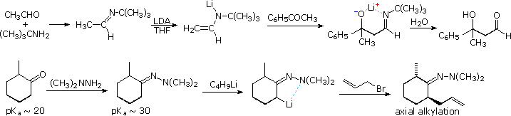
Enamines have been proposed as enolate donors in some aldol reactions. The intramolecular cyclization shown in equation 1 below may be induced by acid or base catalysis or by heating with a 2º-amine such as pyrrolidine. A few drops of acetic acid appear to enhance this catalysis, which probably takes place by the mechanism drawn in the colored box. If the 2º-amine and carboxylic acid functions are incorporated in the same molecule, as for example in the amino acid proline, exceptional catalytic action might be expected. This has been realized in a recent study reported by Alan B. Northrup and David W. C. MacMillan from Cal. Tech. As shown in equation 2, catalytic pyrrolidine effects the homo-condensation of propanal to anti-3-hydroxy-2-methylpentanal under mild conditions. Apparently β-hydroxyaldehydes resist enamine formation, since there is no further reaction of this product. In contrast, alkali metal hydroxides cause polymerization of this aldehyde. Of particular value in this reaction is its' high enantioselectivity. The previously described aldol reactions generate racemic mixtures of stereoisomers from achiral reactants. In this case, enantiomerically pure (S)-proline (the natural amino acid) produces anti-(2S,3S)-3-hydroxy-2-methylpentanal in 99% enantiomeric excess. As expected, (R)-proline catalyzes formation of the enantiomer.
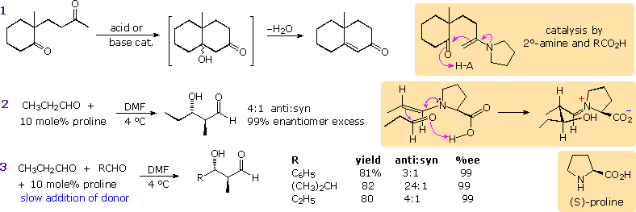
Since the rate of enamine formation from aldehydes is retarded by bulky substituents, cross condensations with 2-propanal are possible, provided this donor aldehyde is added slowly to the acceptor-catalyst mixture. Three examples are shown in equation 3. A mechanism for these stereoselective reactions is drawn in the colored box to the right of equation 2. Proline transfer from the iminium aldol species to a new aldehyde molecule may be assisted by the small amounts of water produced in the initial enamine formation.This transformation is similar to the aldol-retroaldol processes catalyzed by a family of enzymes called aldolases. By clicking on the diagram a series of equations illustrating the biosynthesis of 2-deoxyribose-5-phosphate from glyceraldehyde-3-phosphate by action of the bacterial enzyme DERA will be displayed. Lysine and aspartic acid functions have been identified in the active site of this enzyme. Configurations of the reactants and intermediates are not indicated, but these transformations are highly stereospecific. Antibodies that mimic this enzymatic catalysis have been prepared and used effectively in enantioselective synthesis.
The aldol reaction of aldehydes was first reported in 1872 by C.A. Wurtz at the Sorbonne. Over the past quarter century many chemists have contributed to the development of the aldol reaction into the powerful synthetic tool it is now recognized to be. The interested reader should consult the original literature describing their work. Prominent among these are:
The Mannich reaction is similar to a crossed aldol reaction in that a nucleophilic enol-donor forms a carbon-carbon bond to an electrophilic iminium-acceptor. This assembly is outlined at the top of the following diagram, using a methyl ketone as the enol precursor and an aldehyde iminium electrophile. Formaldehyde is a commonly used aldehyde reactant, as shown in the example below the mechanism. The Mannich base product is a β-aminoketone, usually formed as a mineral acid salt. These bases find use as stable precursors of reactive α,β-unsaturated carbonyl compounds, as illustrated in the same example. Eschenmoser's salt is a particularly useful source of formaldehyde for Mannich reactions.
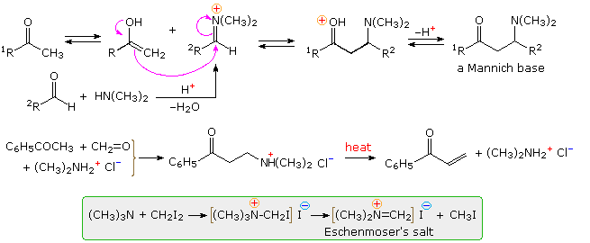
By clicking on the diagram, three additional examples of Mannich reactions will be displayed. The first is a straightforward reaction involving the kinetically favored enol of a cyclic ketone. The second shows the reaction of Eschenmoser's salt with a preformed lithium enolate. Such reactions produce the free base directly. In order to effect the β-elimination of the amine, it is first converted to a quaternary ammonium salt by methylation. Subsequent elimination is very rapid. The last example is an unconventional case in which an intramolecular Mannich precursor is generated in situ by an azaCope rearrangement. By clicking on the diagram a second time, a remarkable synthesis of the bicyclic aminoketone tropinone will appear above. This double Mannich sequence is known as the Robinson-Schopf synthesis in honor of the two chemists who first reported it in the first quarter of the 20th century. The reaction takes place in water under physiological conditions (pH and temperature), and in high yield.
This page is the property of The Edvibe Team. Comments, questions and errors should be sent to contact@edvibe.co.ke. These pages are provided to the IOCD to assist in capacity building in chemical education. 06/06/2025